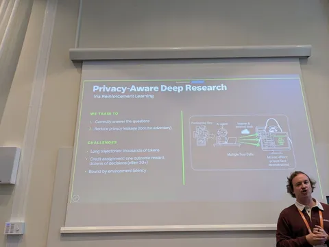
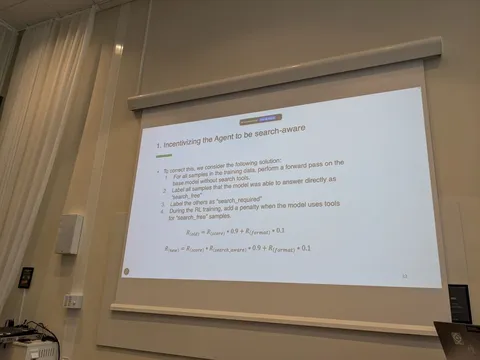
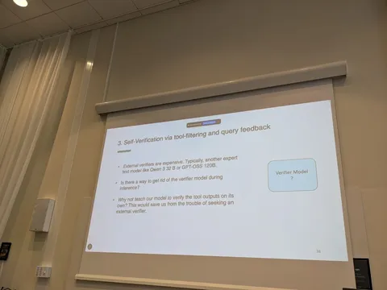
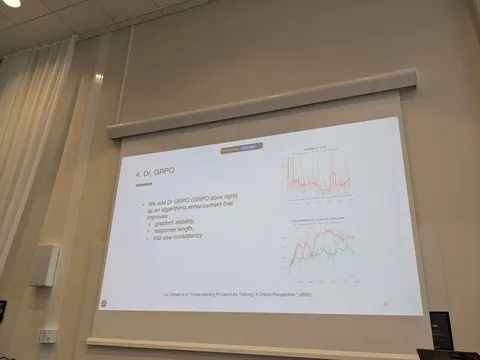
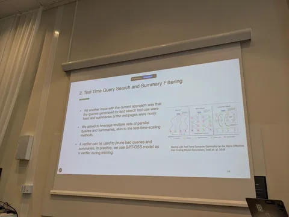
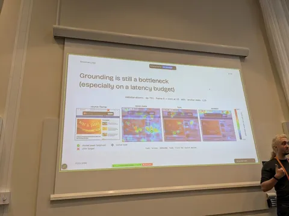
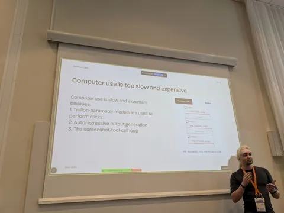
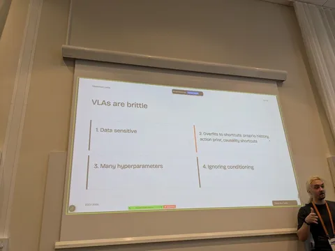

С 8 сентября в шведском Мальмё проходит ECCV — Европейская конференция по компьютерному зрению. Ведущий разработчик подгруппы Agentic Vision и VLM Reasoning в Яндексе Александр Шишеня рассказал о нескольких докладах, которые удалось посетить. Слово Александру.
Enterprise Agents: Capable or Compromised?
Вначале спикер прорекламировал BrowserGym, среду для web-агентов, а также WebArena-Pro — усложнённую версию WebArena с более трудными и multi-app-задачами.
Сам доклад состоял из двух частей. Первая озаглавлена Privacy-Aware Deep Research. Если агент работает с чувствительными данными, часто по всей совокупности тул-коллов можно восстановить приватную информацию, даже если в каждом отдельном тул-колле информация была обфусцирована. Авторы предлагают стратегию борьбы с этим поведением, добавляя на стадии RLVR специальный реворд. Подход действительно работает, утечки во многом устраняются, а качество на целевых задачах растёт. При этом бэйзлайновый подход — добавление промпта — тоже решает задачу приватности, но роняет качество.
Вторая часть — Malice in Agentland. В обучающие данные можно подложить небольшое количество вредоносных данных. Благодаря этому обученная модель будет способна на вредоносное поведение, которое вызывается специальной заранее определённой комбинацией токенов. Например, модель может начать слать на заранее заданный сервер файлы с локального компьютера. Авторы показали, что достаточно всего 1% таких данных в обучающем датасете, чтобы вредоносное поведение триггерилось с вероятностью 99%.
Утверждается, что такие вредоносные семплы достаточно трудно задетектить в датасете, к тому же обучение на таком наборе поднимает целевое качество. По тому же принципу может быть заражена среда, где собираются данные.
При этом в маленькие модели сложнее заложить такое вредоносное поведение.
Learning When to Search, What to Search and What to Trust: Reinforcement Learning for Multimodal Reasoning Agents
Ключевые идеи такие. Модель сама по себе не имеет представления, что она знает хорошо, а что не знает. Чтобы выяснить, на каких семплах вызывать тулы, а на каких не обязательно — нужно прогонать модель с тул-коллами и без. Если на семпле просадка качества при вызове без тул-колла — required_tool=True и затем штрафуем, если на RLVR модель вызывает тул на таких семплах. Далее давайте генерировать сразу несколько различных тул-коллов, которые стремятся решить одну задачу, чтобы генерировать несколько кандидатов. Потом ответы этих тул-коллов фильтруем отдельной моделью на полезность и таким образом пруним траектории. Также предлагают модификацию GRPO — Dr. GRPO (done right).
Manipulation in GUI Agents
В этой работе делают VLA для computer_use. При этом движение мышки генерируют как криволинейную траекторию с помощью flow matching отдельной лёгкой головой по эмбеддингам из VLA. В перерыве удалось пообщаться с автором, поспорили, вместе подумали над идеями.
#YaECCV2026
CV Time







